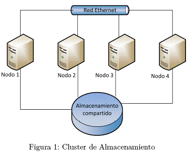
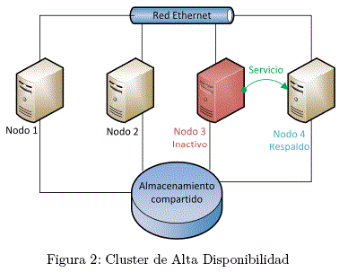
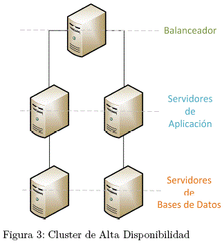
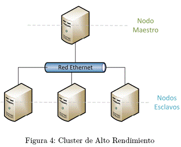
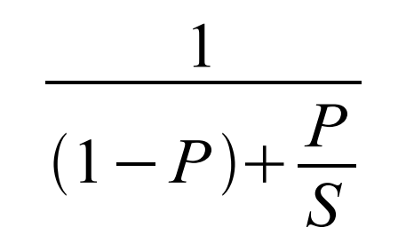
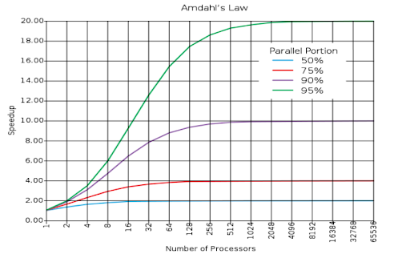

Un cluster es un tipo de sistema distribuido conformado por un conjunto de computadoras interconectadas por red.
Se caracterizan por comunicarse a través del pasaje de mensajes.
Dan al usuario una sensación de transparencia (El usuario no se entera de que está interactuando con un conjunto de computadoras)
¿Cómo surge y Qué función tiene?
La imposibilidad de fabricar procesadores lo suficientemente potentes como para realizar ciertas procesamientos.
Se caracterizan por comunicarse a través del pasaje de mensajes.
Dan al usuario una sensación de transparencia (El usuario no se entera de que está interactuando con un conjunto de computadoras)
Tipos de Cluster: Almacenamiento
Se lo utiliza para mejorar la administración de almacenamiento.
Este facilita tareas como copias de seguridad,recuperación contra desastres, entre otras.

Tipos de Cluster: Alta Disponibilidad
Se destaca este tipo de cluster por ofrecer una continua disponibilidad y confiabilidad.
Esto quiere decir que ante la detecciones de fallos,automáticamente se recuperan migrando a un respaldo.

Tipos de Cluster: Alta Eficiencia
También conocidos como balanceador de carga.
Está arquitectura tiene como objetivo es poder ejecutar la mayor cantidad de tareas en el menor tiempo posible.
Son usados para fines comerciales.

Tipos de Cluster: Alta Rendimiento
Tiene la particularidad de cada nodo puede ejecutar cálculos de forma simultánea.
Se los conoce como cluster computacionales o computación de red.
Son usado con fines científicos.

Ley de Amdahl
Resumidamente la ley de Amdahl es modelo matemático que describe la aceleración esperada de la ejecución de un algoritmo paralelo en función de la fracción paralelizable del algoritmo (P) y el factor de mejora (S).


MPI(Message Passing Interface)
Es un estándar que define la sintaxis y la semántica de las funciones contenidas en un biblioteca de paso de mensajes.
Para poder utilizar se asume que tenemos un espacio de memoria distribuido y cada procesador tiene su memoria local.
Los procesadores solamente pueden acceder a la data por medio de mensaje de red. Cada procesador ejecuta un proceso y este se define en tiempo de ejecución.Un programa tiene un set de procesos.
Cada proceso tiene su espacio de memoria.
Se separa el modelo de la arquitectura.Esto permite por ejemplo que la memoria sea distribuida,compartida o híbrida
Ahora empecemos con la parte práctica
En que consiste nuestra propuesta
Se planea crear un cluster en amazon web service de alto rendimiento para validar la ley de Amdahl.
Para esto se tiene que configurar y enlazar los servidores. Una vez realizado esto se empezar a experimentar con algoritmos paralelizables,como puede ser el cálculo de decimales de pi.
Antes de comenzar esto se tiene que realizar una investigación y capacitación mínima de la herramientas y sistemas a usar.
Servicios utilizados de amazon
Amazon Elastic Compute Cloud (Amazon EC2)
AWS Identity and Access Management (IAM)
Amazon Virtual Private Cloud (Amazon VPC)
Amazon Elastic Compute Cloud (Amazon EC2)
Es un servidor en la nube que nos permite ajustar los recursos de forma dinámica,según su página estos son sus beneficios:
Te permite elegir diferentes tipos de sistemas operativos como las distribuciones de Linux y Windows Server. Además de elegir la configuración de memorias cpu y almacenamiento.
Control total sobre las instancias.
Fiabilidad y seguridad,nos aseguran una disponibilidad del 99,99% y una seguridad que cumple con los requisitos más exigentes en este ámbito.
Viene integrado con la mayoría de los otros servicios.
AWS Identity and Access Management (IAM)
Es un servicio para administrar el acceso a los servicios y recursos de AWS de manera segura ,su son sus beneficios:
Es gratuito.
Control minucioso de lo recursos.
Autenticación multifactor para usuarios con privilegios.
Te permite administrar usuarios,funciones y sus permisos.
Amazon Virtual Private Cloud (Amazon VPC)
Este servicio te permite crear un red virtual,controlar todos los aspectos de esta. Se destaca por:
Seguridad,se puede proteger servidores y que la única forma de accesos a este sea mediante vpc.
Simplicidad,la consola de administración posee un wizard que te permite seleccionar la configuraciones típicas ,se crean subredes,rango de ip,tablas de ruteo y grupo de seguridad
de forma automática.
Escalabilidad y fiabilidad, Se puede adaptar la escala de recursos de forma automática.
Configuración de los nodos
La configuración se realizo sobre una distribucion de Linux Ubuntu
Se instalaron los siguientes programas:
Mpich: Es una implementación de alto rendimiento y extensamente portable de la implementación del estándar MPI 3.1. La versión que se utiliza contiene todas las funciones
y características requeridas por el estándar anteriormente mencionado.
NFS: Es un protocolo de nivel de aplicación que te permite abstraer el almacenamiento,de forma tal que los equipos conectados en una misma red funcionen como ficheros locales.